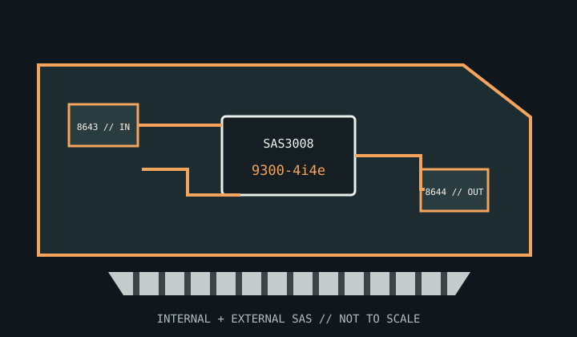

[ INDIVIDUAL COMPONENT // STORAGE / DISK I/O ]
Broadcom / LSI SAS 9300-4i4e
An eight-lane SAS3 HBA with four internal and four external SAS/SATA lanes on a single card.

MODEL SCOPE: SAS 9300-4i4e, LSI00348 family. Confirm board and subsystem IDs because OEM versions can use different firmware and brackets.
Reference specifications
| Controller | LSI SAS3008 Fusion-MPT 2.5 SAS controller. |
|---|---|
| Host bus | PCI Express 3.0 x8. |
| Ports | Four internal lanes on one SFF-8643 Mini-SAS HD connector and four external lanes on one SFF-8644 connector. |
| Protocols | SAS 12/6/3 Gb/s and SATA 6/3 Gb/s, negotiated to the capabilities of the connected drive and path. |
| RAID / HBA mode | HBA/pass-through mode with optional Integrated RAID firmware functions (including RAID 0/1/10/1E); it is not a MegaRAID write-back controller. |
| Cache / protection | No protected write-back cache or BBU. Use host-managed software RAID or the supported Integrated RAID feature set. |
| Firmware / OS | Use the Broadcom firmware and OS driver matching the 9300-4i4e board/OEM ID. Validate the target Windows, Linux, FreeBSD or hypervisor version before deployment. |
| Drive / backplane caveats | Internal Mini-SAS HD and external Mini-SAS HD are distinct connector styles. Match internal backplane cables and external enclosure cables separately; verify enclosure expander and power design. |
Compatibility and service notes
- The external connector is for a compatible SAS/SATA enclosure, not a generic Mini-SAS cable-to-disk connection.
- Do not expect SATA disks to support dual paths; path redundancy requires compatible SAS devices, enclosure and cabling.
- Record firmware, operating-system driver, cable routes and device topology when troubleshooting link negotiation.
Sources & further reading
- Broadcom — SAS 9300-4i4e product pageManufacturer model reference and support downloads.
- Broadcom — SAS 9300-4i4e PCI Express to 12 Gb/s SAS HBA User GuideOfficial adapter manual covering installation, operation and supported configuration.
- Broadcom — SAS 9300-4i4e Quick Installation GuideManufacturer quick installation and hardware connection reference.